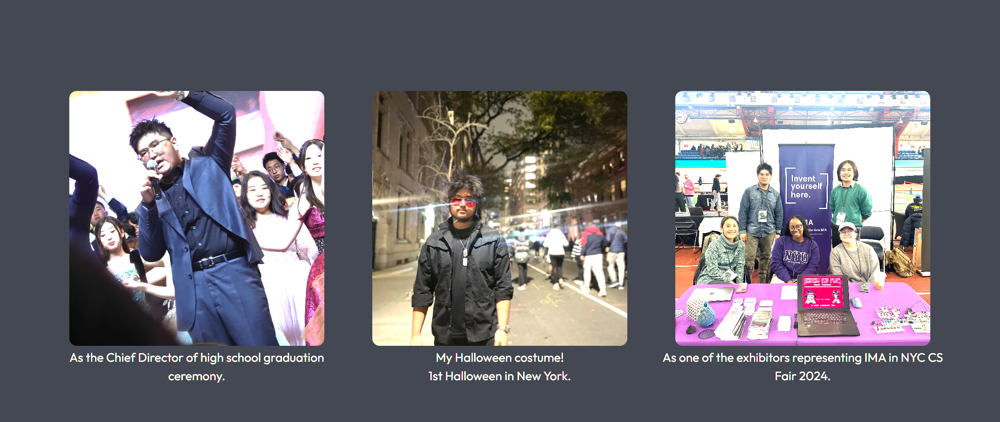

When conceptualizing the project, I assessed my skill level and realized that I couldn't do a lot of content that required JavaScript. I looked at the HTML tutorials Sam provided on his GitHub page. In addition, I found a web tutorial on HTML and CSS from the video site bilibili: HERE , which I followed to learn a lot about web development and HTML and CSS code.
Then, I started to create my own website. Firstly, I want it to have a header, an intriguing title, and my self-intro. Also, I checked HERE as a reference to get my web font. Thanks Google!

I setup the header, the mainpage(I used photoshop to edit that for complicated layout), the hypertext links, and used CSS to give them formats.
Then I worked on the About page. I found several photos and uploaded them on the site. Then, I used CSS for layout, which was time-consuming. I also searched up about how to keep the aspect ratio of imgs when cutting them by CSS: HERE
Then, I investigated how to use iframe to embed webpage inside my own webpage: HERE because I have several public website projects and a Cargo portfolio site. I wanted to utilize them. Then, I edited the layouts, which was really complicated.
At last, I developed a template for images layout and edited my Interest webpage. It was convenient after the template developed but the progress is hard.